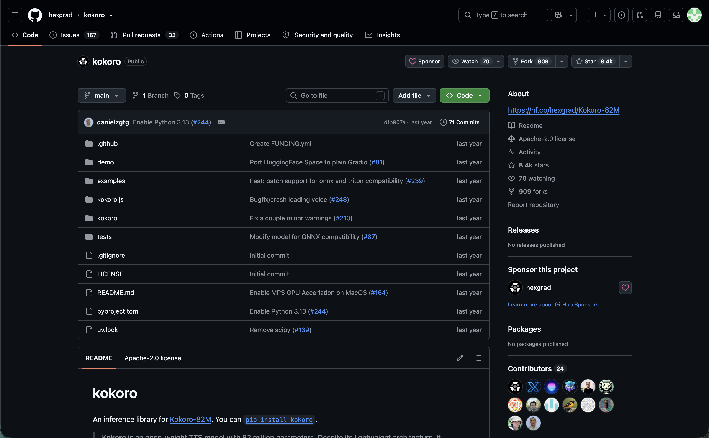
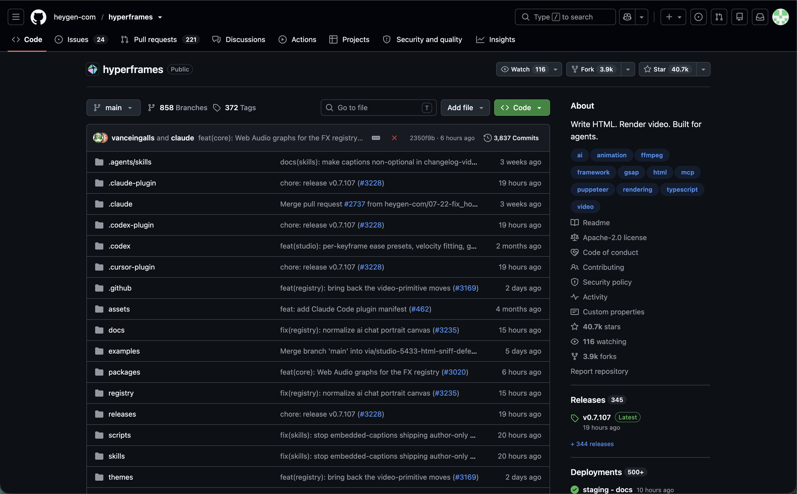
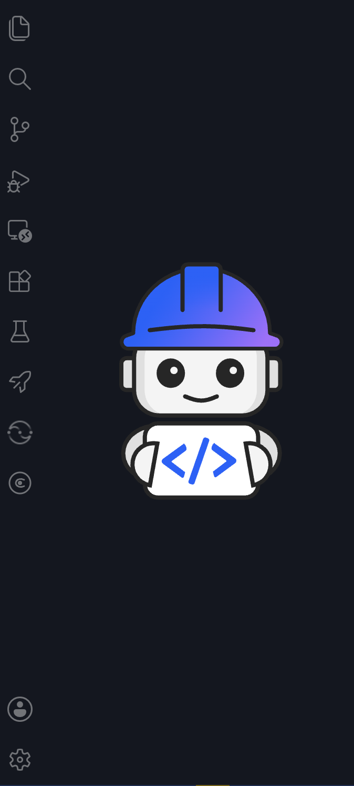

Write a script. Bob handles the rest.
An open-weight text-to-speech model. Fully offline, no API key, no cloud cost. 82M parameters. Free to use, modify, and distribute.

Write HTML. Render video. A headless renderer that turns browser animations into production-quality MP4s — built for agents.

I used IBM Bob to wrap both tools into a single, designer-friendly pipeline. Describe your feature — Bob generates the voice, builds the scenes, syncs the audio, and renders the video.

IBM watsonx Orchestrate